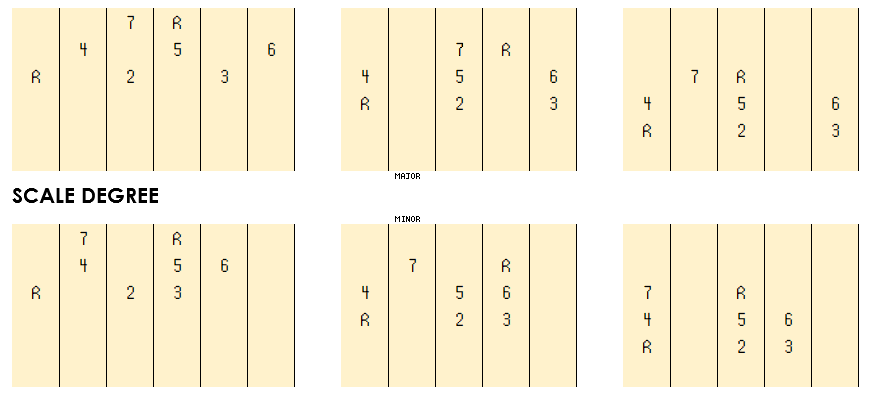

GROWL
I'd rather be playing guitar
 EN
EN
HARMONIES FOR UPPER VOICES
Not to sound too much like Derek Zoolander here (and his problems with left) but I discovered a problem that is affecting my playing. I've been studying along to the frankly phenomenal learning resources of Jens Larsen (his Yt) but sadly my ability to voice chords on the fly and to play inversions in particular is coming too slowly. By slowly breaking down my playing I've come to realise I have a problem with down!
It isn't hard to theorise how this came about. Who picks up a guitar and immediately plays a descending scale or arpeggio? I'm guessing not that many. Especially one starting from an upper string like the top E. The blame on my own account lies with learning from patterns. That is, finding the pattern of a scale, chord, arpeggio etc and then always starting my practice sessions playing them upwards. Just when I think I have ascending nailed, I try to play downwards and sometimes freeze.
This becomes a particular problem when trying to build chords and harmonies by adding intervals BELOW melody notes (which are often on top strings and called "upper voices"). My mission then for the next few months is to attack the guitar hard from the other side! I'm not suggesting doing an Albert King and stringing upside down; I just mean re-arranging my thinking.
I drew two switching diagrams; the first identifying the common scalar components of harmonies, the second indicating the quality of the interval each forms when played after the upper root note. Note that in music an interval is always named relative to the lower note in the interval. So, in the first block, although the 5th of the scale is present directly below the root, the interval between it and the upper root is actually called a descending 4th.
A DOWNWARD ARP EXCERISE
Armed with this diagram and a little practice I suggest building some exercises. Here is an example one based off a simple 2-5-1 progression in G major. For each chord descend the arpeggio referring each note back to the upper chord root.
I've tabbed this for ease of explanation but I should re-iterate that the whole point really is to DO THIS IN YOUR HEAD. It is by thinking about the intervals between component notes and their character that we get better at voicing. After playing this exercise though a few times, thinking each time about the interval spacing you should already be way faster at adding lower harmonies quickly to upper voice tones.
I heartily recommend making your own exercises based on similar progressions. Make sure you cover the diminished arpeggios too. When you feel VERY brave maybe extend the same process to trickier arpeggios where for example the upper melody note is the 9 in a rootless 3,5,7,9 arpeggio.